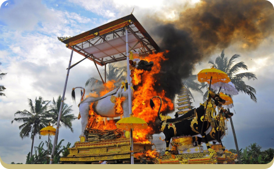
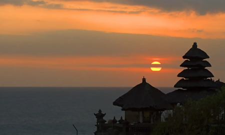
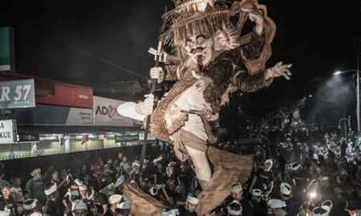
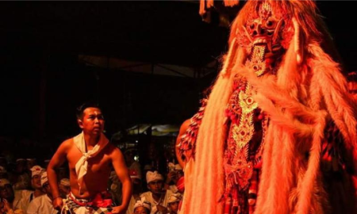
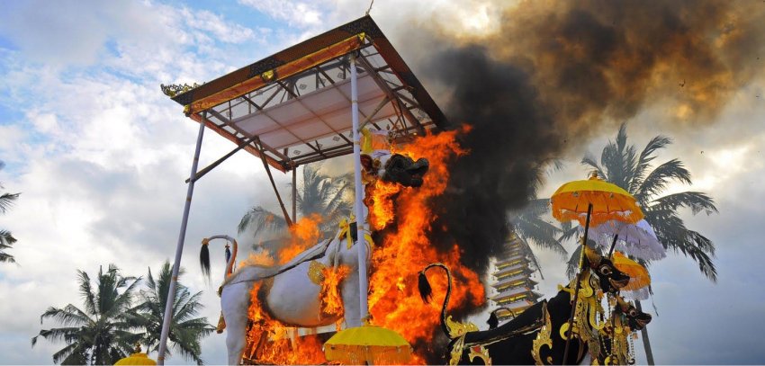
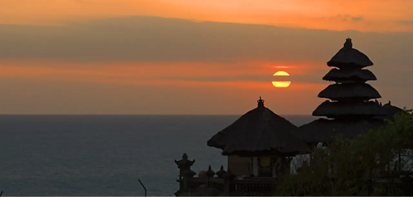
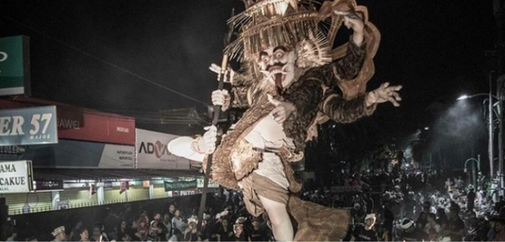
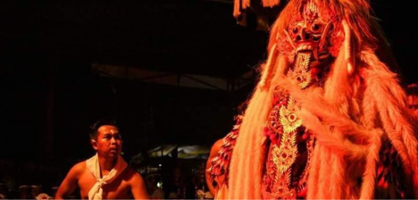

Pulau Bali terkenal dengan julukan sebagai "Pulau Dewata" karena kentalnya budaya Hindu, seperti banyaknya sesaji yang dipersembahkan untuk dewata penjaga di berbagai tempat di Bali.
POPULAR DESTINATION
CULTURE

Ngaben

Nyepi

Ngerupuk

Calonarang

Ngaben adalah upacara pembakaran jenazah umat Hindu di Bali. Upacara ngaben merupakan suatu ritual yang dilaksanakan untuk mengembalikan roh leluhur ke tempat asalnya. Ngaben dalam bahasaBali berkonotasi halus yang sering disebut palebon.

Nyepi adalah hari suci umat Hindu yang dirayakan setiap Tahun Baru Saka. Hari ini jatuh pada hitungan Tilem Kesanga (IX) yang merupakan hari penyucian dewa-dewa yang berada di pusat samudera yang membawa intisari amerta air hidup. Untuk itu umat Hindu melakukan pemujaan suci terhadap mereka.

Tradisi Ngerupuk adalah hari yang jatuh pada “Tilem Sasih Kesanga” (bulan mati yang ke-9) sehari sebelum Hari Nyepi menurut tanggalan Bali, umat Hindu melaksanakan upacara Bhuta Yadnya di segala tingkatan masyarakat, mulai dari masing-masing keluarga, banjar, desa, kecamatan dan seterusnya, dengan mengambil salah satu dari jenis-jenis caru (semacam sesajian) menurut kemampuannya.

Calonarang adalah sebuah seni pertunjukan tari yang berasal dari Pulau Bali. Adapun seni pertunjukan Calonarang diperkirakan muncul pada 1825 atau pada zaman Kerajaan Klungkung. Seni tari Calonarang berlatar era Prabu Airlangga (1009-1042) dari Kerajaan Kahuripan di Jawa Timur.